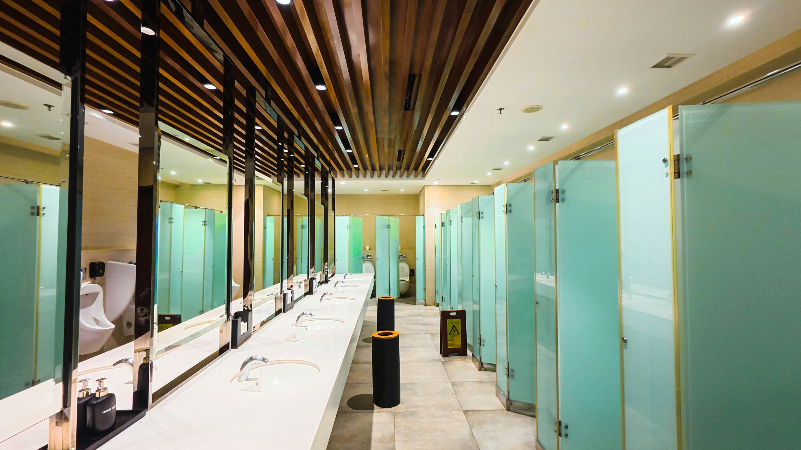
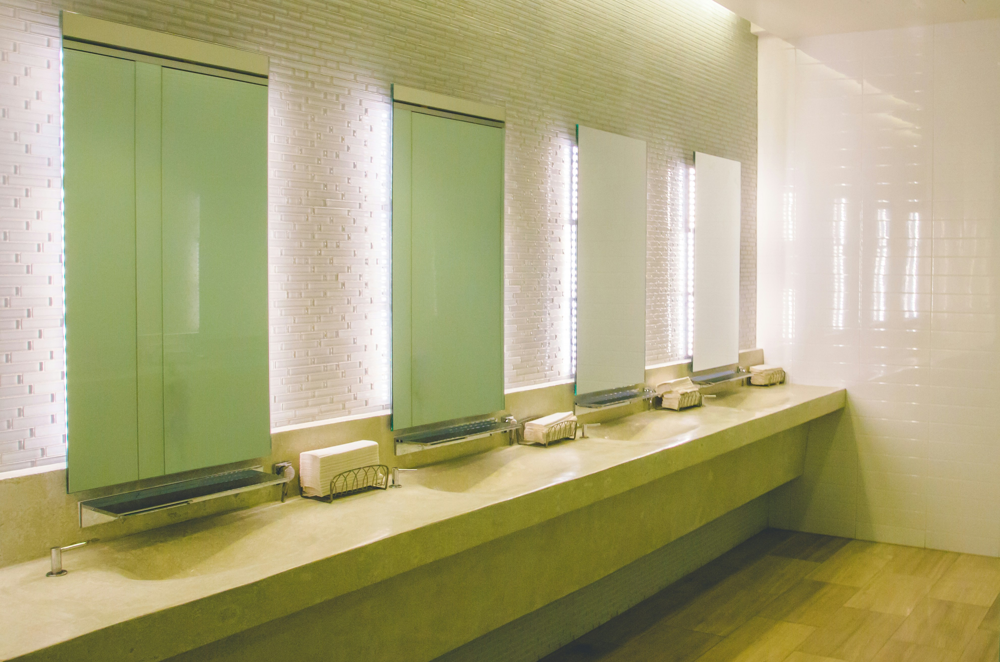
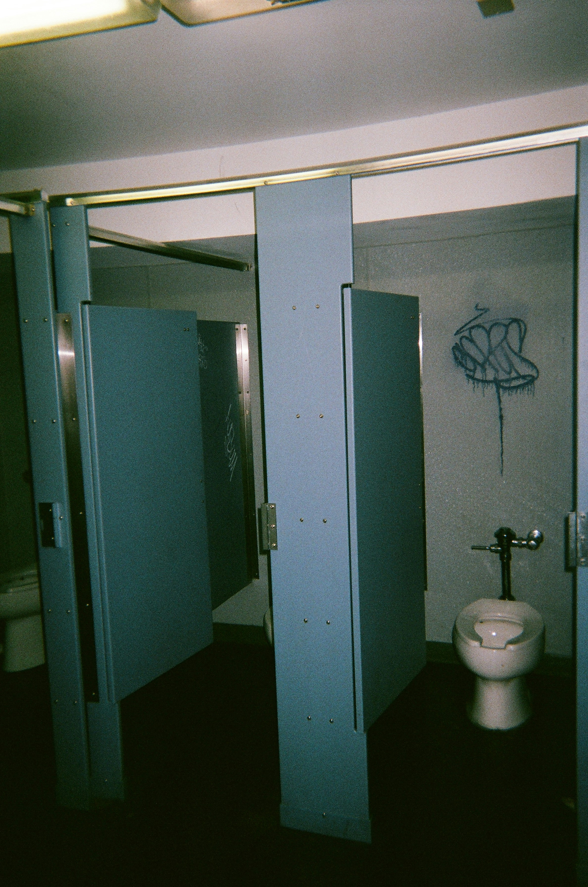
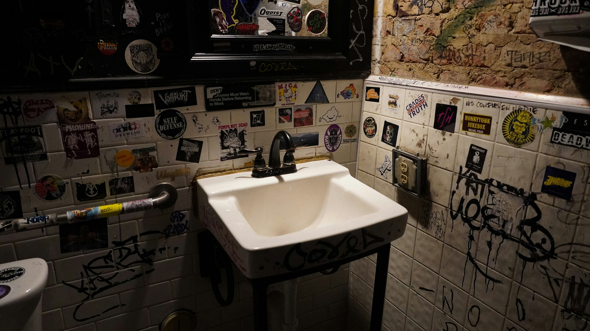
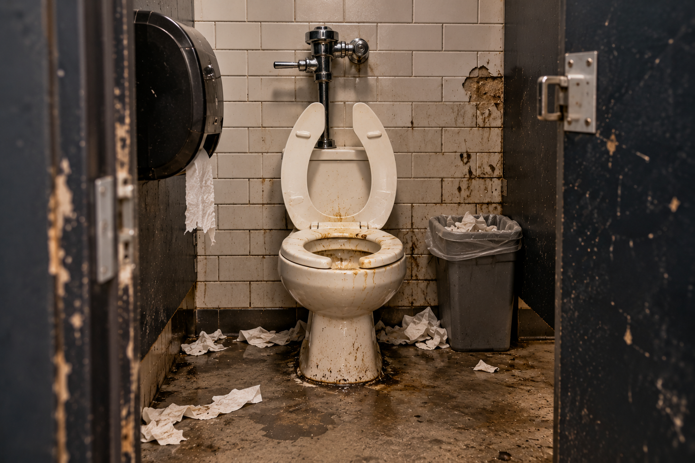
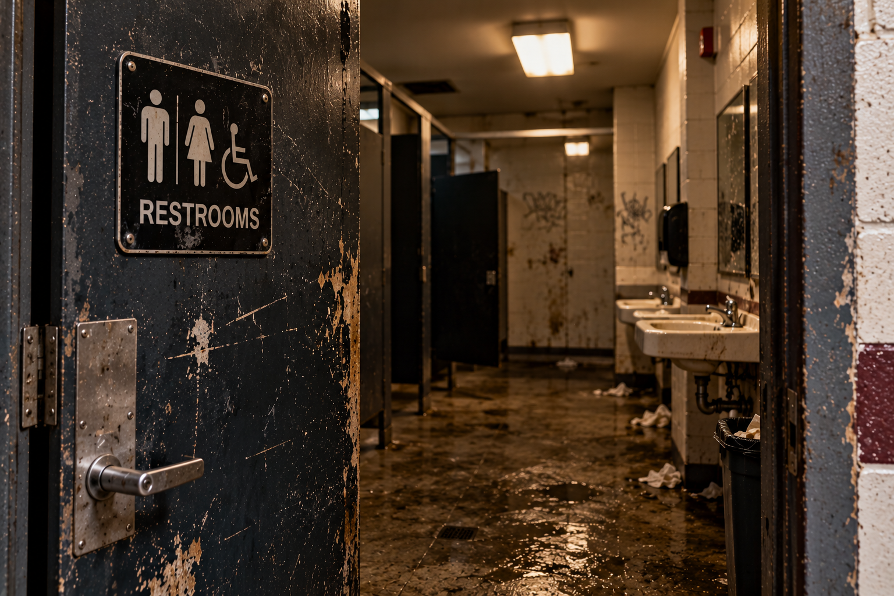

The Royal Flush
SAFE
A restroom so unexpectedly clean you almost feel obligated to leave a tip.
The floors are spotless, the soap works, and there's actually toilet paper.
Final Verdict: A throne worthy of royalty.
Wrong Turn, Right Place.
Not all pit stops are created equal.
A restroom so unexpectedly clean you almost feel obligated to leave a tip.
The floors are spotless, the soap works, and there's actually toilet paper.
Final Verdict: A throne worthy of royalty.
The restroom technically works, which is about the nicest thing we can say.
The floor is suspiciously wet, and everything raises questions.
Final Verdict: Enter at your own risk. Touch nothing.
The lighting flickers, the door barely closes, and the smell has its own personality.
This isn't a restroom visit. It's a survival situation.
Final Verdict: Keep driving. Your dignity depends on it.
Six photos. Three ratings. You be the judge.






Here's a real California rest stop for your next road trip.
Map shown for reference only. Reviews are fictional.